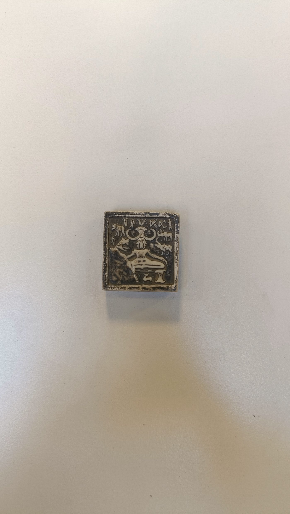
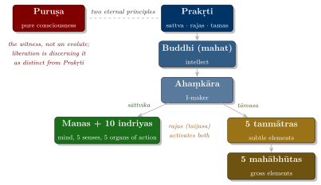
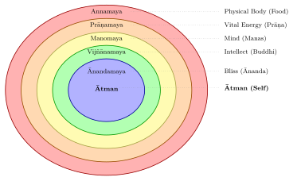

Chapter 1: Introduction: What is Yoga?¶
Yoga Sūtra 1.1
atha yogānuśāsanam
Now begins the authoritative instruction on Yoga.
— Patañjali, Yoga Sūtra 1.1
1.1 The Eternal Quest¶
For well over two thousand years, thinkers and practitioners in South Asia have asked how the restless mind can be stilled, how suffering can be ended, and how freedom (mokṣa, kaivalya, nirvāṇa) can be attained. Brahmanical, Buddhist and Jain ascetics all developed disciplines of meditation, breath and bodily restraint in answer to these questions. The family of such disciplines that came to be called Yoga is the subject of this volume.
Yoga is not merely a system of physical exercises, as it is often portrayed in the contemporary world. In its classical sources it is a soteriological discipline — a method for liberation — that works on the body (śarīra), the vital breath (prāṇa), the mind (manas, citta) and the intellect (buddhi), with the aim of realising the true nature of the self (puruṣa or ātman, according to the school). Yoga has never been a single system: the word covers Patañjali’s meditative darśana, the Gītā’s disciplines of action, knowledge and devotion, Tantric ritual-meditative practice, medieval Haṭha Yoga and the posture-based practice of the modern world. One aim of this volume is to keep these strands distinct while showing how they borrowed from one another.
Key Point: The Many Dimensions of Yoga
Across its history the word yoga has named:
-
Darśana (Philosophy) — one of the six classical Brahmanical schools, closely allied to Sāṃkhya
-
Sādhana (Practice) — a structured discipline of self-transformation
-
Mārga (Path) — in the Gītā and later Hinduism, any disciplined way to liberation (karma, bhakti, jñāna)
-
Modern practice — since the twentieth century, a global posture-and-breath practice often pursued for health
1.2 Etymology of Yoga¶
The word Yoga is derived from the Sanskrit root yuj, whose basic meaning is “to yoke,” “to harness,” or “to join.” The Dhātupāṭha (the list of verbal roots associated with Pāṇini’s grammar) records more than one root yuj, and the commentators exploited this. Vyāsa’s Yogabhāṣya on Yoga Sūtra 1.1 glosses the word simply as yogaḥ samādhiḥ, “yoga is concentration,” taking it from yuj in the sense of samādhi rather than “union”.
Definition: Etymological Dimensions of Yoga
The root yuj yields three principal meanings:
-
Yuj samādhau — To concentrate, to absorb, to enter into samādhi
-
Yujir yoge — To yoke, to unite, to join
-
Yuj saṃyamane — To control, to discipline, to restrain
Classical Yoga (Patañjali and Vyāsa) favours the first sense; theistic and Vedāntic texts favour “union” (of the individual self with the supreme); the Gītā often uses yoga in the broader sense of “discipline” or “method”.
The word yoga is cognate with the English “yoke” (from the Proto-Indo-European root *yeug-), the Greek zugon, and the Latin iugum. In early Vedic usage it refers to yoking draught animals to a chariot; the meditative sense develops later, in the Upaniṣads and the epic.
1.2.1 Definitions Across the Tradition¶
Different schools and texts have defined Yoga according to their own emphasis and perspective. The following are among the most celebrated definitions:
Patañjali’s Definition — Yoga Sūtra 1.2
yogaś citta-vṛtti-nirodhaḥ
Yoga is the cessation (nirodha) of the fluctuations (vṛtti) of the mind-stuff (citta).
This is perhaps the most widely cited definition, establishing Yoga as fundamentally a discipline of the mind. The term citta here refers to the entire field of consciousness, including manas (the thinking mind), buddhi (the discriminative intellect), and ahaṃkāra (the ego-sense) (Table 1.1).
The Bhagavad Gītā defines yoga quite differently, in terms of action rather than stillness: “equanimity is called yoga” (samatvaṃ yoga ucyate, 2.48) and “yoga is skill in action” (yogaḥ karmasu kauśalam, 2.50). Both verses are discussed with the Gītā’s Karma Yoga in Chapter 3.
Kaṭha Upaniṣad Definition
tāṃ yogam iti manyante sthirām indriya-dhāraṇām
They consider Yoga to be the firm holding (restraint) of the senses.
— Kaṭha Upaniṣad 2.3.11 (= 6.11)
| Source | Definition | Emphasis |
|---|---|---|
| Yoga Sūtra 1.2 | Cessation of mental fluctuations | Mind control |
| Gītā 2.48 | Equanimity in action | Equipoise |
| Gītā 2.50 | Skill in action | Perfection in karma |
| Kaṭha Upaniṣad | Firm restraint of senses | Sense mastery |
| Viṣṇu Purāṇa | Contact of the Self with the Supreme | Divine union |
| Yogayājñavalkya | Union of the individual self (jīvātman) with the supreme self | Spiritual union |
| Haṭha texts | Haṭha = “force”; a later esoteric etymology reads ha (sun) + ṭha (moon) | Effortful method |
1.3 Historical Overview of Yoga¶
The history of Yoga is long and its early stages are poorly documented. Dates in this volume follow the mainstream academic chronology, with traditional dates labelled as such, and are collected in the Chronology at the end of the book. The older syntheses, Mircea Eliade’s Yoga: Immortality and Freedom and Georg Feuerstein’s The Yoga Tradition, remain stimulating, but their chronology, especially for Haṭha Yoga, has been overtaken by the editions of the last two decades (Eliade 1958; Feuerstein 1998); Stuart Sarbacker’s survey reflects the current state of research (Sarbacker 2021). The following broad phases may be identified (White 2014; Samuel 2008).
1.3.1 Indus and Vedic Background (before c. 500 BCE)¶
The so-called Paśupati seal from Mohenjo-daro (Harappan civilisation, c. 2600–1900 BCE) shows a horned figure seated with heels drawn together, and since Sir John Marshall’s excavation reports it has often been called a “proto-Yogi” or “proto-Śiva”. The identification is speculative: the Indus script is undeciphered, the posture may be a conventional way of depicting a seated figure, and many specialists doubt that the image tells us anything about meditative practice (Samuel 2008). It should be read as a possible, not an established, early trace (Figure 1.1).


In the Ṛg Veda (composed c. 1500–1200 BCE) there is no systematic Yoga, but there are references to ascetic heat (tapas), to inspired seers, and to ecstatic figures who stand outside ordinary society, such as the long-haired keśin of ṚV 10.136 (see Section 1.4).
1.3.2 The Upaniṣadic Period (c. 700–200 BCE)¶
The Upaniṣads represent a decisive turning point in the evolution of Yoga. In the later verse Upaniṣads (the Kaṭha and Śvetāśvatara, probably of the last few centuries BCE), Yoga is for the first time explicitly named and described as a discipline for attaining spiritual knowledge (jñāna) and liberation (mokṣa).
The Kaṭha Upaniṣad presents the famous chariot metaphor: the body is the chariot, the Ātman is the rider, the intellect (buddhi) is the charioteer, the mind (manas) is the reins, and the senses (indriyāṇi) are the horses. Yoga is the means by which the charioteer controls the horses and brings the chariot safely to its destination.
The Śvetāśvatara Upaniṣad provides one of the earliest detailed descriptions of meditation technique, including posture, breath control, and the withdrawal of the senses. The Maitrī Upaniṣad, whose date is debated, describes a six-limbed Yoga (ṣaḍaṅga yoga) that parallels Patañjali’s eight-limbed system.
1.3.3 The Epic and Classical Period (c. 400 BCE – 500 CE)¶
This period witnessed the flowering of Yoga into distinct and well-articulated paths. It was also the period in which Buddhist and Jain contemplative disciplines were being systematised (Section 9.10; Volume 4, Buddha–Jina Prabhā); the vocabulary of meditation was shared across these traditions, and Patañjali’s Yoga Sūtra in particular shows clear engagement with Buddhist ideas (Bronkhorst 1993).
The Bhagavad Gītā¶
The Bhagavad Gītā, set within the Mahābhārata, did more than any other text to present yoga as a discipline for people living in the world. Kṛṣṇa’s teaching uses yoga in several senses. The Gītā itself names two disciplines, the jñānayoga of the Sāṃkhyas and the karmayoga of the yogins (BG 3.3); later readers found in it three, of action (above all BG chs 3 and 5), devotion (BG chs 9 and 12) and knowledge (BG chs 2 and 13), and from Vivekānanda onwards these became three of the “four yogas” of modern Hindu teaching (Section 1.9). The Gītā presents them as complementary rather than exclusive, suited to people of different natures (svabhāva); they are treated in Chapters 3 and 4.
Patañjali’s Yoga Sūtras¶
The most systematic yoga text of the classical period is the Yoga Sūtras of Patañjali. Philipp Maas has argued that the sūtras and the earliest commentary (the Bhāṣya) form a single work, the Pātañjalayogaśāstra, composed c. 325–425 CE; older scholarship placed the sūtras anywhere between the 2nd century BCE and the 3rd century CE (Maas 2013). The work systematised diverse yogic teachings into 195 or 196 concise aphorisms (sūtras; the count varies slightly between editions) arranged in four chapters (pādas). Since Vivekānanda it has been treated as the foundational text of “Rāja Yoga”; it is discussed in detail in Chapter 2.
1.3.4 The Tantric Period (c. 500–1200 CE)¶
The Tantric movement, whose earliest surviving scriptures date from around the 5th–6th centuries CE (Sanderson 2009), developed new forms of Yoga that treated the body as a map of the cosmos and a site of divine power. The Śaiva, Śākta, Vaiṣṇava and Buddhist Tantric traditions developed elaborate systems of practice involving mantra, yantra, nyāsa, visualisation of the subtle body, and (in some Śākta lineages) kuṇḍalinī.
1.3.5 The Haṭha Yoga Period (c. 11th–18th centuries CE)¶
Haṭha Yoga — a discipline of physical techniques (mudrā, bandha, prāṇāyāma, later many āsanas) aimed at controlling breath and the vital fluid (bindu) — first appears in texts of the 11th–13th centuries such as the Amṛtasiddhi, which comes from a Buddhist Tantric milieu, and the Vaiṣṇava Dattātreyayogaśāstra (Mallinson and Singleton 2017; Mallinson 2011). It was later associated above all with the Nātha ascetics, who claim Matsyendranātha and Gorakṣanātha as founders. The Haṭha Yoga Pradīpikā of Svātmārāma (c. 1450 CE) compiled these earlier works; it was followed by the Śiva Saṃhitā (c. 15th century), the Haṭharatnāvalī (17th century) and the Gheraṇḍa Saṃhitā (c. 1700). These texts are discussed in Chapter 7.
1.3.6 The Modern Period (19th Century Onwards)¶
The modern revival of Yoga began in the late 19th century. Swāmī Vivekānanda spoke at the Parliament of the World’s Religions in Chicago in 1893 and published Rāja Yoga (1896), which presented Patañjali’s Yoga to Western readers. In the 20th century teachers such as T. Krishnamacharya, Swāmī Śivānanda, Swāmī Kuvalayānanda, B.K.S. Iyengar and Pattabhi Jois made Yoga a global practice (Chapter 11).
1.4 Yoga in the Vedic Literature: A Deeper Exploration¶
The Vedic background of Yoga is real but indirect. The Saṃhitās do not describe a yogic method, but they contain ideas — ascetic heat, inspired vision, the vital breaths — that later Yoga took up and reinterpreted.
1.4.1 Yoga in the Ṛg Veda¶
The Ṛg Veda, the oldest Vedic collection (composed c. 1500–1200 BCE according to the academic consensus; some Indian traditional authors propose much earlier dates), contains hymns that later tradition read as allusions to meditative and yogic practice. The concept of tapas (austerity, inner heat) is central to the Vedic worldview. In Ṛg Veda 10.129, the celebrated Nāsadīya Sūkta (Hymn of Creation), the creative impulse of the universe is attributed to tapas:
Ṛg Veda 10.129.3
tama āsīt tamasā gūḷham agre 'praketaṃ salilaṃ sarvam ā idam
tucchyenābhv apihitaṃ yad āsīt tapasas tan mahinājāyataikam
Darkness was hidden by darkness in the beginning; all this was an undistinguished sea. That One which was concealed by the void — by the power of tapas (creative heat) was that One born.
The hymn to the Keśin (the long-haired ascetic, ṚV 10.136) provides one of the earliest glimpses of a yogic practitioner. The Keśin is described as one who has drunk the cup of Viṣa (interpreted by some as the poison of worldly experience, by others as a sacred intoxicant), who rides the wind, and who perceives things invisible to ordinary mortals. This figure bears striking resemblance to later descriptions of the accomplished yogi.
Ṛg Veda 10.136.2–3
munayo vāta-raśanāḥ piśaṅgā vasate malā
vātasyānu dhrājiṃ yanti yad devāso avikṣata
unmaditā mauneyena vātāṃ ā tasthimā vayam
śarīred asmākaṃ yūyaṃ martāso abhi paśyatha
The sages (muni), girdled with wind, wear soiled garments of tawny hue. They follow the rushing of the wind when the gods have entered them. “Exhilarated by our silence (mauneya), we have mounted the winds. You mortals see only our bodies.”
1.4.2 Yoga in the Upaniṣads of the Vedic Schools¶
The first descriptions of a yogic method come not from the Saṃhitās but from Upaniṣads transmitted by particular Vedic schools. The Śvetāśvatara Upaniṣad, which belongs to the Kṛṣṇa Yajurveda, contains perhaps the earliest systematic description of yogic practice, with instructions on posture, breath control and meditation:
Śvetāśvatara Upaniṣad 2.8
trir unnataṃ sthāpya samaṃ śarīraṃ
hṛdīndriyāṇi manasā saṃniveśya
brahmoḍupena pratareta vidvān
srotāṃsi sarvāṇi bhayāvahāni
Holding the body steady with the three (chest, neck, and head) erect, causing the senses and the mind to enter the heart, the wise one should cross over all the fear-bringing currents by means of the raft of Brahman.
The next verse (2.9) tells the practitioner to restrain the breaths and to hold the mind attentively, “as one holds a chariot yoked to unruly horses”: it is among the earliest descriptions of breath-control as a technique of meditation (Chapter 8). The Atharvaveda Saṃhitā, for its part, contains hymns on healing and on the vital breath, among them a hymn in praise of Prāṇa (Śaunaka recension 11.4), but no method of practice. The Praśna Upaniṣad, transmitted in the Atharvaveda tradition, discusses the five prāṇas and their functions, a teaching that became foundational for later prāṇāyāma theory. Table 1.2 keeps the two layers apart: the hymns of the Saṃhitās supply ideas, the Upaniṣads the first methods.
| Text | Vedic school | Yoga-related content |
|---|---|---|
| Saṃhitās: ideas, but no method | ||
| Keśin Sūkta (ṚV 10.136) | Ṛgveda | Ecstatic asceticism; wind-riding; trance |
| Nāsadīya Sūkta (ṚV 10.129) | Ṛgveda | Tapas as creative principle |
| Hiraṇyagarbha Sūkta (ṚV 10.121) | Ṛgveda | The “golden embryo”; later tradition (Mahābhārata, Vācaspati Miśra) names Hiraṇyagarbha as the first teacher of Yoga |
| Hymn to Prāṇa (AVŚ 11.4) | Atharvaveda | Praise of the vital breath |
| Upaniṣads: the first methods | ||
| Śvetāśvatara Up. | Kṛṣṇa Yajurveda | Systematic meditation; posture; breath control |
| Kaṭha Up. | Kṛṣṇa Yajurveda | Chariot metaphor; Yoga defined; sense control |
| Maitrī Up. | Kṛṣṇa Yajurveda | Six-limbed yoga |
| Praśna Up. | Atharvaveda | Pañca Prāṇa; physiology of the vital breath |
| Māṇḍūkya Up. | Atharvaveda | Four states of consciousness; analysis of Oṃ |
| Chāndogya Up. | Sāmaveda | Tat tvam asi; meditation on the Udgītha |
1.4.3 The Yoga Upaniṣads¶
Beyond the principal Upaniṣads, there exists a collection of about twenty Yoga Upaniṣads — minor Upaniṣads specifically devoted to yogic practices and philosophy. Despite the Upaniṣadic name, these are medieval works: several borrow from Haṭha texts such as the Yogabīja and Vivekamārtaṇḍa, and the longer South Indian recensions printed in the familiar 108-Upaniṣad collection were expanded as late as the 18th century (Bouy 1994). They are valuable witnesses to how Haṭha and Vedānta were combined in the later tradition. Table 1.3 lists the most important; they are treated more fully in Volume 2, Upaniṣad Dīpikā.
| Upaniṣad | Key Teachings |
|---|---|
| Yoga-tattva Up. | Four types of Yoga: Mantra, Laya, Haṭha, Rāja |
| Yoga-kuṇḍalinī Up. | Kuṇḍalinī; khecarī mudrā (draws on Haṭha texts) |
| Dhyāna-bindu Up. | Six-limbed Yoga; meditation on Oṃ; nāḍīs |
| Nāda-bindu Up. | Meditation on inner sound (nāda); the mātrās of Oṃ |
| Amṛta-nāda Up. | Six-limbed Yoga; Oṃkāra meditation |
| Śāṇḍilya Up. | Eight-limbed Yoga; nāḍī description; prāṇāyāma |
| Haṃsa Up. | Haṃsa mantra; identification with Brahman |
| Varāha Up. | Tattvas; eight-limbed Yoga; nāḍīs |
1.5 Yoga in the Epics and Purāṇas¶
The Mahābhārata (composed over several centuries, c. 400 BCE–400 CE) contains extensive teachings on Yoga, much of it earlier than or contemporary with Patañjali’s systematisation; the Rāmāyaṇa is far less concerned with it.
1.5.1 Yoga in the Mahābhārata¶
Beyond the Bhagavad Gītā, the Mahābhārata contains several other sections devoted to Yoga, including the Mokṣadharma Parva (the section on liberation within the Śānti Parva), which presents extensive teachings on Sāṃkhya-Yoga, the nature of the Self, and various meditative practices. The Anuśāsana Parva contains Bhīṣma’s teachings on dharma, Yoga, and meditation delivered from his bed of arrows.
The epic’s Yoga is closely tied to Sāṃkhya and describes concentration on a single point, breath control and the attainment of supernormal powers; it has been surveyed in detail by Hopkins, Brockington and Bronkhorst (Hopkins 1901; Brockington 2003; Bronkhorst 1993).
Three features of this epic yoga deserve notice, because they differ from both the Upaniṣads and Patañjali. First, Sāṃkhya and Yoga appear as a pair of complementary paths, the one a knowledge of the principles of existence, the other a discipline that confers power; the Mokṣadharma repeatedly asks which is superior, and answers in different ways in different places. Secondly, the yoga described is above all a technique of concentration: the yogin sits still, restrains the senses and the breath, fixes the mind in stages (the epic speaks of dhāraṇās on the elements and on parts of the body), and becomes “like a log”. Some passages describe a fourfold meditation (dhyānayoga) whose stages Bronkhorst has compared with the Buddhist jhānas. Thirdly, the epic’s yogins are powerful. Narratives show them entering the bodies of others — the female ascetic Sulabhā enters the mind of King Janaka in debate, and the sage Vipula enters the body of his teacher’s wife to guard her — and leaving their own bodies at death through the crown of the head, ideas that David Gordon White has traced through later literature (White 2009). Liberation and power were not yet separated; Patañjali’s later warning that the powers are obstacles to samādhi (YS 3.37) is in part a response to this older yoga.
1.5.2 Yogic Themes in the Rāmāyaṇa¶
The Rāmāyaṇa of Vālmīki, while primarily a narrative of Śrī Rāma’s life, contains numerous references to meditative practices, the power of tapas, and the yogic attainments of sages such as Viśvāmitra, Vasiṣṭha, and Agastya. The Yoga Vāsiṣṭha (also called the Mahārāmāyaṇa), traditionally attributed to Vālmīki but in fact a much later Kashmiri work (its earlier form, the Mokṣopāya, is dated to the 10th century CE), is one of the most extensive philosophical texts on Jñāna Yoga, presented as a dialogue between the sage Vasiṣṭha and the young prince Rāma; its teaching on the mind and on yoga is discussed in Chapter 4. Table 1.4 summarises the yogic content of the epics and Purāṇas.
| Text | Section | Yogic Content |
|---|---|---|
| Mahābhārata | Bhagavad Gītā | Karma, Bhakti, Jñāna, Dhyāna Yoga |
| Mahābhārata | Mokṣadharma Parva | Sāṃkhya-Yoga; meditation; liberation |
| Mahābhārata | Anuśāsana Parva | Dharma; tapas; yogic disciplines |
| Rāmāyaṇa | Bāla Kāṇḍa | Sages’ tapas; Viśvāmitra’s austerities |
| Yoga Vāsiṣṭha | Six Prakaraṇas | Jñāna Yoga; nature of consciousness; māyā |
| Bhāgavata Purāṇa | Skandhas 3, 7, 11 | Kapila’s Sāṃkhya-Yoga (3); navadhā bhakti (7.5.23); Uddhava Gītā (11) |
| Viṣṇu Purāṇa | Book 6 | Yoga as union of jīvātman and paramātman |
| Śiva Purāṇa | Various | Śiva as the great yogin (mahāyogin); meditation; mantra |
| Mārkāṇḍeya Purāṇa | Dattātreya and Alarka | Yoga practice; obstacles; signs of approaching death |
| Kūrma Purāṇa | Īśvaragītā | Pāśupata yoga in the frame of Patañjali’s eight limbs |
| Skanda Purāṇa | Chs. 174–183 | Pāśupata yoga (old Nepalese recension) |
1.5.3 Yoga in the Purāṇas¶
The Purāṇas, composed and recomposed over most of the first millennium CE and later (see Volume 7, Itihāsa–Purāṇa), contain a large and still little-studied body of yoga teaching. It is mostly given in chapters that interrupt the narrative: a god or sage instructs a king or disciple, usually in Patañjali’s eight limbs, but with a personal deity as the object of meditation and with devotion as the setting. The Purāṇas were for centuries the main way in which yoga reached householders, and modern anthologies of yoga’s sources draw heavily on them (Mallinson and Singleton 2017).
Pāśupata yoga. Some of the oldest Purāṇic yoga belongs to the Pāśupatas, the earliest Śaiva ascetic order (Volume 6, Tantra–Āgama). Chapters on Pāśupata yoga in the Vāyu and Liṅga Purāṇas teach the auxiliaries of yoga (five in the Vāyu, Patañjali’s eight in the Liṅga), the obstacles to yoga and the powers it brings. The last ten chapters (174–183) of the old Nepalese recension of the Skanda Purāṇa (probably 6th–7th century) describe a Pāśupata yoga of breath-control, fixation and meditation on Śiva in the heart, with the tongue placed on the palate, a detail that recurs in later Haṭha practice; such passages suggest that some of Haṭha Yoga’s techniques have roots in pre-Tantric Śaiva asceticism. The Īśvaragītā, eleven chapters that open the second part of the Kūrma Purāṇa, is a Śaiva counterpart to the Bhagavad Gītā in which Śiva teaches a Pāśupata yoga built on Patañjali’s eight limbs (Nicholson 2014).
Dattātreya. In the Mārkāṇḍeya Purāṇa the sage Dattātreya teaches yoga to King Alarka: breath-control and the other auxiliaries, the dangers and obstacles that beset the yogin, the signs by which he can foresee his death, and the practice of leaving the body. This episode helped make Dattātreya the patron deity of yogis, the “lord of yoga” to whom the Vaiṣṇava Dattātreyayogaśāstra (Chapter 7) and later the Nāths and Mahānubhāvas looked back (Rigopoulos 1998).
Vaiṣṇava yoga. In the Viṣṇu Purāṇa (book 6) King Keśidhvaja teaches his kinsman Khāṇḍikya a yoga defined as the joining of the mind to brahman; its meditation is on the visible form of Viṣṇu, called the “auspicious support” (śubhāśraya), on which the mind rests before passing to the formless. The Bhāgavata Purāṇa goes further. Kapila’s teaching to his mother Devahūti (3.28) leads the yogin through the eight limbs to a meditation that dwells on Viṣṇu’s body limb by limb, from the feet to the smiling face; in the eleventh book Kṛṣṇa teaches Uddhava the techniques of meditation, lists eighteen yogic powers and declares them distractions from devotion (11.15), and names three yogas — of knowledge, of action and of devotion (11.20) — a scheme that anticipates the modern classification of the paths of yoga (Section 1.9). Here yoga is subordinated to bhakti: the powers are worthless, meditation is a form of loving remembrance, and liberation is service of the Lord.
Later, encyclopaedic Purāṇas such as the Agni and Garuḍa include compact summaries of eight-limbed yoga alongside their sections on ritual, medicine and law. Taken together, the Purāṇas show that Patañjali’s scheme of eight limbs was widely known in the first millennium even where his metaphysics was not: the limbs were kept, but the goal became union with, or service of, a personal god.
1.6 The Concept of the Guru in Yoga¶
Almost every Yoga lineage has been transmitted from teacher to disciple (guru–śiṣya), and the texts give the teacher an authority that is hard to overstate. A widely recited verse, found in the Guru Gītā and in many devotional collections, expresses the exalted view of the teacher:
Popular verse in praise of the Guru
gurur brahmā gurur viṣṇur gurur devo maheśvaraḥ
guruḥ sākṣāt paraṃ brahma tasmai śrīgurave namaḥ
The Guru is Brahmā, the Guru is Viṣṇu, the Guru is Lord Maheśvara (Śiva). The Guru is verily the Supreme Brahman. Salutations to that glorious Guru.
The tradition holds that the highest truths of Yoga cannot be learned from books alone but must be received from a teacher who has travelled the path. The Muṇḍaka Upaniṣad declares: tad-vijñānārthaṃ sa gurum evābhigacchet samit-pāṇiḥ śrotriyaṃ brahma-niṣṭham — “To know That (Brahman), one should approach a Guru, with fuel in hand, who is learned in the scriptures and established in Brahman” (1.2.12). The two qualities named here, learning in the Veda (śrotriya) and establishment in Brahman (brahmaniṣṭha), head the lists of a teacher’s qualifications in later Vedāntic manuals such as the Vivekacūḍāmaṇi (33), which add freedom from desire, blamelessness, calm and compassion.
The same tradition that exalts the guru also places great power in the guru’s hands. Modern Yoga has seen serious abuses of that power (see Chapter 11); classical texts themselves insist that the teacher be tested for learning and conduct before being accepted.
1.7 Yoga and Allied Disciplines¶
Yoga has always borrowed from, and lent to, neighbouring disciplines of the Bhāratīya knowledge system (jñāna paramparā). The closest are Sāṃkhya, which supplied Patañjala Yoga with its metaphysics; Vedānta, which absorbed yoga and argued with it (Chapter 4); Tantra, from which Haṭha Yoga took its subtle body (Chapters 5–6); and Āyurveda. Each has its own volume in this series: Volume 3 on the darśanas, Volume 6 on Tantra and Volume 13 on Āyurveda. Music theory also took over the yogic doctrine of inner sound (Chapter 10).
1.7.1 Yoga and Āyurveda¶
Yoga and Āyurveda share a common vocabulary of breath, digestion (agni) and the humours (doṣa), and Haṭha texts claim that particular practices cure diseases of vāta, pitta and kapha. Historically, however, the two developed largely independently. The classical compendia of Caraka and Suśruta say little about yogic technique, with one notable exception: towards the end of the first chapter of the Carakasaṃhitā’s section on the embodied person (Śārīrasthāna), yoga and liberation (mokṣa) are presented as the means by which all painful sensations cease, the one temporarily and the other for ever, and the yogin’s eight powers are listed. Dominik Wujastyk has shown that this passage teaches a yoga of mindfulness (smṛti) close to early Buddhist and Sāṃkhya ideas, and that it is among the oldest systematic accounts of yoga in Sanskrit (Wujastyk 2012). The systematic pairing of āsana and prāṇāyāma with an individual’s constitution (prakṛti) — cooling breaths for a pitta type, vigorous postures for kapha, and so on — is a modern development, popularised in books such as David Frawley’s Yoga and Ayurveda (Frawley 1999); it is not a classical prescription.
1.7.2 Yoga and Sāṃkhya¶
Yoga is traditionally paired with Sāṃkhya as one of the six darśanas. While Sāṃkhya provides the theoretical framework — the enumeration of the twenty-five tattvas (principles) from Puruṣa and Prakṛti through to the five gross elements — Yoga provides the practical methodology for realising the truth that Sāṃkhya describes. The Bhagavad Gītā (5.5) puts it succinctly: ekaṃ sāṃkhyaṃ ca yogaṃ ca yaḥ paśyati sa paśyati — “He who sees Sāṃkhya and Yoga as one, truly sees.” (In the Gītā these words mean the paths of knowledge and of disciplined action rather than the later classical schools.)
Scholarly Note: The Sāṃkhya-Yoga Relationship
The philosophical relationship between Sāṃkhya and Yoga has been a subject of extensive scholarly discussion. While the classical Sāṃkhya of Īśvarakṛṣṇa’s Sāṃkhya Kārikā is technically nirīśvara (atheistic, without a concept of God), Patañjali’s Yoga system is seśvara (theistic, including the concept of īśvara). Despite this difference, the two systems share the same cosmological framework of Puruṣa and Prakṛti, the same analysis of the guṇas, and the same ultimate goal of kaivalya (liberation through discrimination).
1.8 The Concept of Consciousness in Yoga¶
One of the most distinctive contributions of the Upaniṣadic and yogic traditions is their detailed mapping of states of consciousness, including dream, deep sleep and meditative absorption.
1.8.1 The Four States of Consciousness (Avasthā Catuṣṭaya)¶
The Māṇḍūkya Upaniṣad, one of the shortest yet most philosophically dense of all Upaniṣads, describes four states of consciousness (Table 1.5):
Māṇḍūkya Upaniṣad 7
nāntaḥ-prajñaṃ na bahiṣ-prajñaṃ nobhayataḥ-prajñaṃ
na prajñāna-ghanaṃ na prajñaṃ nāprajñam
adṛṣṭam avyavahāryam agrāhyam alakṣaṇam
acintyam avyapadeśyam ekātma-pratyaya-sāraṃ
prapañcopaśamaṃ śāntaṃ śivam advaitam
caturthaṃ manyante sa ātmā sa vijñeyaḥ
Not inward-turned consciousness, not outward-turned consciousness, not both together, not a mass of consciousness, not consciousness and not unconsciousness. It is unseen, beyond empirical dealings, ungraspable, without marks, unthinkable, indescribable. Its essence is the experience of its own Self. It is the cessation of the phenomenal world — peaceful, auspicious, non-dual. That is the Fourth (Turīya). That is the Ātman. That is to be known.
| State | Sanskrit | Oṃ Sound | Body | Description |
|---|---|---|---|---|
| Waking | Jāgarita | A | Sthūla | Outward-turned awareness; sense perception |
| Dream | Svapna | U | Sūkṣma | Inward-turned awareness; subtle impressions |
| Deep Sleep | Suṣupti | M | Kāraṇa | Undifferentiated consciousness; bliss |
| The Fourth | Turīya | Silence | Beyond | Pure awareness; the Ātman itself |
1.8.2 Modern Neuroscience: An Analogy, Not a Confirmation¶
It is sometimes claimed that the Upaniṣadic states correspond to EEG frequency bands (beta for waking, alpha and theta for meditation, gamma for turīya). No such correspondence has been established, and the Upaniṣads should not be read as anticipating neuroscience. What can be said is more modest. Laboratory studies show that meditation alters measurable brain activity; for example, Lutz and colleagues reported unusually high-amplitude gamma-band synchrony in long-term Tibetan Buddhist practitioners during a compassion meditation (Lutz et al. 2004). Whether such findings bear on the metaphysical claims of Vedānta or Yoga is a philosophical question that laboratory data cannot settle.
1.9 The Principal Streams of Yoga¶
Modern Hindu teaching speaks of several paths (mārga) of Yoga, each suited to a particular temperament. The best-known scheme, of four yogas — Rāja, Karma, Bhakti and Jñāna — is Vivekānanda’s: he lectured and published on each of them in the 1890s, and his books made the classification standard (De Michelis 2004). It had precedents. The Bhāgavata Purāṇa already names three yogas of knowledge, action and devotion (11.20; Section 1.5.3), and the medieval yoga texts arranged four others — Mantra, Laya, Haṭha and Rāja — in a hierarchy (Chapter 7). Modern teaching presents all of them as tributaries of one river; historically they arose in different milieux and were often rivals. Table 1.6 summarises the key text, faculty and method that modern accounts attach to each.
| Path | Key Text | Faculty | Method |
|---|---|---|---|
| Rāja Yoga | Yoga Sūtras | Mind (manas) | Eight limbs; mental discipline |
| Haṭha Yoga | HYP, GS, ŚS | Body (śarīra) | Āsana, prāṇāyāma, mudrā, bandha |
| Karma Yoga | Bhagavad Gītā | Will (saṃkalpa) | Selfless action; niṣkāma karma |
| Bhakti Yoga | BG; NBS | Heart (hṛdaya) | Devotion; surrender; love |
| Jñāna Yoga | Upaniṣads; VS | Intellect (buddhi) | Inquiry; discrimination; knowledge |
| Kuṇḍalinī Yoga | Tantric texts | Energy (prāṇa) | Cakra activation; kuṇḍalinī awakening |
| Mantra Yoga | Tantra; Veda | Sound (nāda) | Japa; sacred syllables |
| Tantra Yoga | Āgamas | Totality | Integration of all faculties |
Abbreviations as in the list of abbreviations at the front of the volume.
1.10 Key Texts of the Yoga Tradition¶
The texts on which this volume draws fall into four broad layers, whose dates are set out in the Chronology at the end of the book. The first is Vedic: the Ṛgveda’s references to tapas and to ecstatic ascetics, and the Upaniṣads — Kaṭha, Śvetāśvatara, Maitrī, Māṇḍūkya — in which a method of meditation is first described. The second is classical: Patañjali’s Yoga Sūtra with its Bhāṣya and the long line of commentaries that runs from the Vivaraṇa and Vācaspati Miśra to Vijñānabhikṣu (Chapter 2), together with the Bhagavad Gītā and the yoga chapters of the epic and the Purāṇas. The third is Tantric: the Śaiva, Śākta, Vaiṣṇava and Buddhist scriptures in which the subtle body was mapped (Chapters 5–6). The fourth is the Haṭha corpus, from the eleventh-century Amṛtasiddhi and the Dattātreyayogaśāstra (c. 1200) through the Haṭha Yoga Pradīpikā (c. 1450) to the eighteenth-century Haṭhābhyāsapaddhati (Chapter 7). Alongside these run the devotional literature — the Bhāgavata Purāṇa and the Nārada and Śāṇḍilya Bhakti Sūtras — and, from the twelfth century, a growing body of yoga in the regional languages, in Persian and in Arabic.
1.11 The Philosophical Framework of Yoga¶
As noted in Section 1.7, Patañjala Yoga takes its metaphysics largely from Sāṃkhya. This section sets out that framework and the Upaniṣadic model of the five sheaths, both of which recur throughout the volume.
1.11.1 The Sāṃkhya-Yoga Framework¶

The Sāṃkhya system posits two fundamental realities (Figure 1.2): puruṣa, consciousness, the eternal and unchanging witness; and prakṛti, nature, the dynamic principle composed of the three guṇas — sattva (illumination), rajas (activity) and tamas (inertia). Bondage (bandha) arises from the confusion of Puruṣa with Prakṛti — the mistaken identification of the Self with the body-mind complex. Liberation (kaivalya) is the discriminative realisation (viveka-khyāti) that Puruṣa is eternally free and distinct from Prakṛti. Yoga is the practical means to achieve this realisation.
1.11.2 The Pañca Kośa Model¶
The Taittirīya Upaniṣad (2.1–5) describes the human being as five concentric sheaths (kośas), from the gross to the most subtle (Figure 1.3; Table 1.7). Advaita Vedānta later used the scheme as a method of discrimination, setting each sheath aside in turn as “not the self”; modern teachers, as in the third column of the table, match the sheaths to the limbs of yoga.

| Kośa | English | Yoga Practice | Description |
|---|---|---|---|
| Annamaya | Food sheath | Āsana, Ṣaṭkarma | Physical body nourished by food |
| Prāṇamaya | Vital sheath | Prāṇāyāma | Energy body; the five prāṇas |
| Manomaya | Mental sheath | Pratyāhāra | Mind and emotions |
| Vijñānamaya | Wisdom sheath | Dhāraṇā, Dhyāna | Discriminative intellect |
| Ānandamaya | Bliss sheath | Samādhi | Causal body; deep bliss |
1.12 Yoga as a Living Tradition¶
What distinguishes Yoga from a mere philosophical system or historical curiosity is that it remains a living tradition. Millions of practitioners across the globe continue to practise it, although most modern practice — centred on postures and largely pursued for health — differs considerably from the meditative and renunciant Yoga of the classical texts (Chapter 11).
In December 2014 the United Nations General Assembly, on India’s initiative, declared 21 June the International Day of Yoga. Clinical research suggests that yoga can modestly help with conditions such as chronic low-back pain and anxiety, but the evidence is uneven in quality and many popular health claims remain unproven (see Section 11.11).
In the classical sources, however, the aim of Yoga lies beyond health and well-being: it is liberation, whether understood as the kaivalya of Sāṃkhya-Yoga, the mokṣa of Vedānta or the nirvāṇa of the Buddhists.
1.13 Structure of This Volume¶
The chapters follow the currents of yoga roughly in the order in which they arose, so that each technique is met after the ideas from which it grew. Chapter 2 treats Patañjali’s Yoga Sūtra: its four parts, its eight limbs, its theory of mind and the commentators who interpreted it for fifteen centuries. Chapter 3 turns to the Gītā’s yogas of action and devotion and to their later history, and Chapter 4 asks how the Advaita Vedāntins, for whom liberation came by knowledge alone, used and criticised yoga. Chapters 5 and 6 describe the yoga of the Tantras and the subtle body of channels, centres and kuṇḍalinī that the Tantras devised. Chapter 7 follows Haṭha Yoga, which inherited that body, from the Amṛtasiddhi to the Mysore court, together with the ascetic orders that carried it and its life in Tamil, Marathi, Persian and the Sikh scriptures. Chapters 8 to 10 take up three practices that run through all these traditions: breath-control, meditation (with its Buddhist and Jain forms) and the yogas of mantra, dissolution and inner sound. Chapter 11 traces modern yoga from Vivekānanda to the International Day of Yoga, including its politics, its scandals and the clinical evidence. A chronology, a glossary and a select bibliography close the volume.